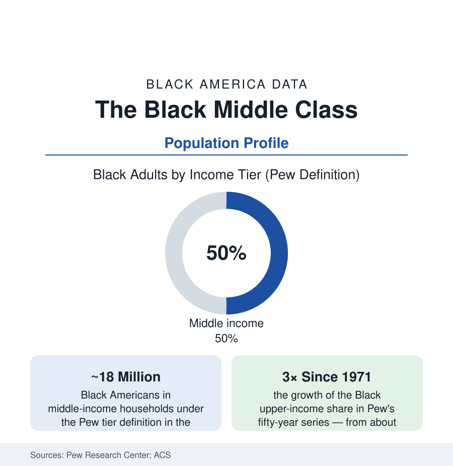

Black Census
The Black Middle Class: Half the Population, Measured in Full
About half of Black households sit in the middle-income tier — around 18 million people — with an upper tier that has tripled since the 1970s. The demographic profile of the class.

By the standard statistical definition — households earning between two-thirds and twice the national median, adjusted for size — about half of Black America is middle class: roughly 18 million people in the middle-income tier in the Pew Research Center's recent analyses, flanked by about 44% in the lower tier and about 6% in the upper. It is the largest single bloc of Black life in the demographic data, and the least narrated: the poverty file commands the policy record, the wealth file the headlines, while the middle — the teachers and postal supervisors, the nurses and plant managers of the employment section — carries the population's daily weight. This article profiles it with the same rigor as any other stratum.
The Tier Arithmetic and Its Fifty-Year Motion
Pew's fifty-year series gives the class its dynamics: in 1971 roughly 55% of Black adults were lower-income, 41% middle, and 2% upper; the decades since moved the lower share down to the mid-forties, the middle to about half, and the upper share tripled to six percent — progress measured in single points per decade, with the 2000s a stall in the series and the 2010s a resumption. The gap against the national tiers persists at every line: white households' upper share runs about three times the Black share, their lower share about fifteen points under. The definitional honesty the researchers attach: the tiers are income bands, not wealth or security — a household can be middle-income and one transmission failure from the payday lender (the income-to-wealth translation is the net-worth article's entire subject), and the Federal Reserve's fragility measures (the $400-emergency question, on which Black middle-income households answer 'cannot cover' at rates far above white middle-income households') record the stratum's thin ice under the income line.
Composition: Occupations, Households, and the Two-Income Engine
The occupational anatomy is the employment section read from the household side: the Black middle tier is disproportionately public-sector and credentialed-service (teachers, nurses, social workers, administrators, letter carriers and transit operators, military retirees on second careers), disproportionately two-earner (the Black middle-class household historically requires both adults' incomes to hold the tier that one earner holds in the white comparison data — the earnings gap closed by labor supply), and disproportionately headed by women in its single-adult segment. Its household formation runs through the family-structure file's strongest tier: married-couple households constitute the clear majority of the middle tier's family households, with the marriage-and-income correlation the data show in both directions. The education composition completes the portrait: most Black middle-tier adults hold some college or a degree (the attainment file's associate-and-bachelor's mass), with the skilled trades and the seniority ladders of unionized industry as the tier's non-college pillar — the two ladders, credential and seniority, whose relative fortunes (the seniority ladder sawed by deindustrialization, the credential ladder priced by the loan file) are the class's modern economic history.
Geography: The Stratum's Capitals
The middle class has a map, and the cities section is largely drawn on it: the Washington region (the nation's highest Black median incomes — the federal engine's hometown effect, Prince George's and Charles counties among the wealthiest majority-Black jurisdictions in the data), Atlanta's suburban ring (the South DeKalb and Henry County tiers), the historic strongholds (Detroit's northwest neighborhoods in their prime, Chicago's South Side middle belt, Los Angeles' View Park and Baldwin Hills — among the highest-income Black neighborhoods in the census tracts), and the newer Sun Belt suburban destinations of the return-migration file. The suburbanization data record the class's spatial strategy across two generations: exit to the subdivision for the school file and the appreciation file, with the tract-level audits now recording the strategy's costs (the suburban poverty adjacency, the appraisal gaps, the municipal-service thinness of the unincorporated Black suburb) that the next edition of the map will price.
Reading the Middle-Class Data
Half the population, tripled at the top, fragile at the emergency line: the Black middle class is simultaneously the community's ballast and its most instructive measurement — the stratum where the system's promises come closest to keeping themselves, close enough to show exactly where the remaining machinery (wealth conversion, appraisal, the two-income requirement) still taxes the arrival. Count it at 18 million. It is not the exception to the Black demographic story. By the numbers, it is the story's center of mass.
More in Black Census
The Black Population of the United States: Size, Definitions, and Distribution
The Black population of the United States totals 52.8 million — 15.4 percent of the nation. How the Census Bureau defines and counts the population, and where it lives.
Black Median Household Income in the United States
Black median household income stands at $56,490 in the Census Bureau's annual income report — how the figure is measured, how it compares, and what drives it.
The Black Poverty Rate: Levels, Children, and the Long Trend
The official Black poverty rate is 17.1 percent — against 11.1 percent nationally and 7.7 percent for non-Hispanic White Americans. How poverty is measured and what the data show.
Source: Pew Research Center income-tier analyses; U.S. Census Bureau, American Community Survey and Current Population Survey; Brookings Institution middle-class research; Federal Reserve Survey of Consumer Finances.